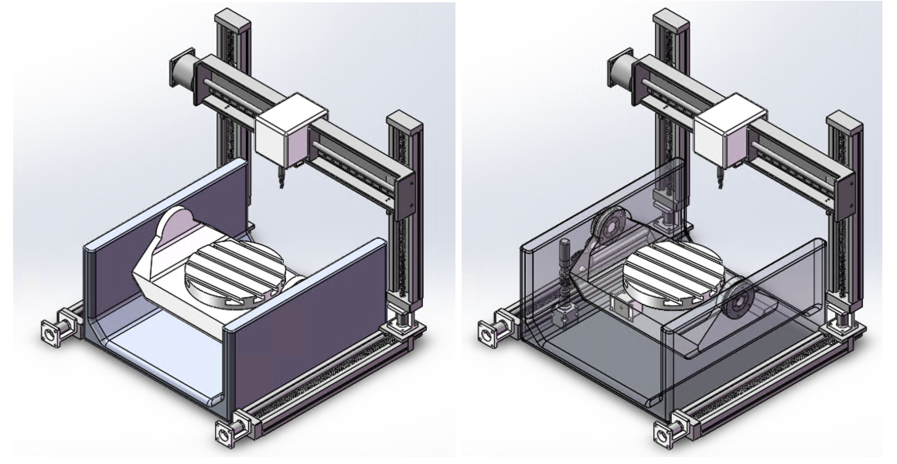
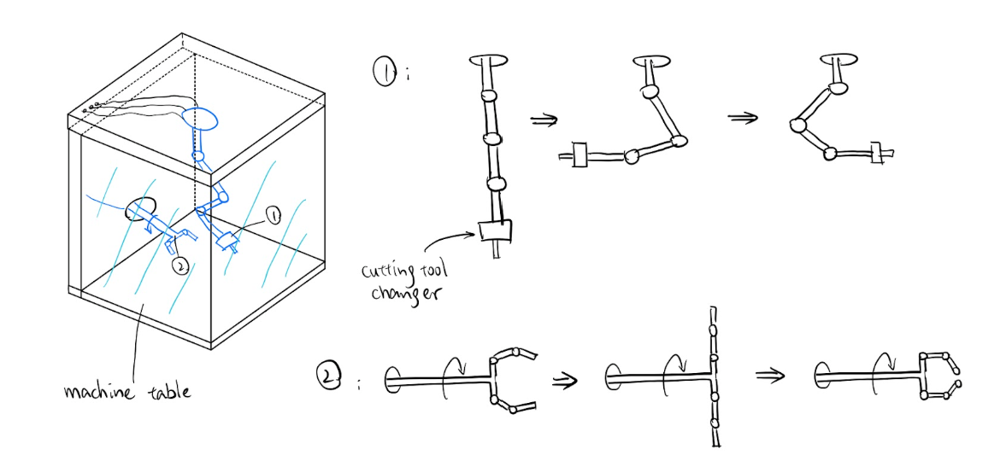

Entry-Level Desktop CNC Milling Machine

Overview
Designed a compact 5-axis CNC milling machine for small design studios and independent professionals, bridging the gap between cheap hobbyist machines and expensive industrial ones. Took the project from market research through prototyping three different design concepts, choosing the best one, and building it out in full CAD.
What I did
- Researched the market and set clear design goals (size, weight, cost, precision, safety).
- Sketched and compared three different machine concepts, scoring them against real products on the market to pick the strongest design.
- Engineered the internal mechanisms that let the machine move and rotate a workpiece smoothly and precisely.
- Chose materials and parts (motors, bearings, gears, cutting tools) with reasoning behind each choice.
- Modeled the final design in SolidWorks, including a full parts breakdown and technical drawings.
- Final result: a 50 × 50 × 48 cm machine weighing about 23 kg, priced around $15,400 CAD.
Design

Early concept sketch: two articulated arms inside the enclosure, one carrying the cutting tool changer (1) and one handling the workpiece (2).
Tools
SolidWorks, engineering design & decision-making frameworks